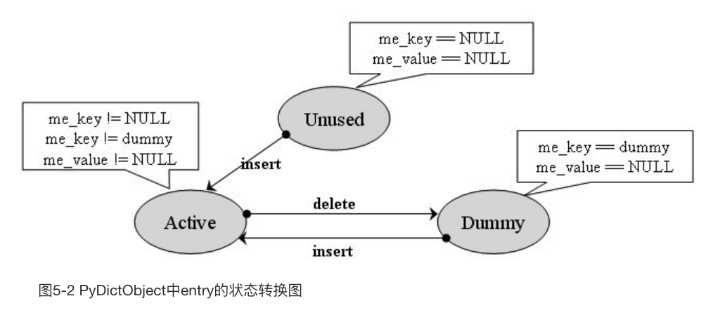

<!DOCTYPE html>
<html>
  <head>
    <title>python源码复习笔记 – Wyman的原创技术博客 – 恭喜你发现我的小站，撩我请加QQ：234707482、Wechat：_Wyman</title>

        <meta charset="utf-8" />
    <meta content='text/html; charset=utf-8' http-equiv='Content-Type'>
    <meta http-equiv='X-UA-Compatible' content='IE=edge'>
    <meta name='viewport' content='width=device-width, initial-scale=1.0, maximum-scale=1.0'>
    <meta name="baidu-site-verification" content="0OpfO1OtHA" />
    
    <meta name="description" content="" />
    <meta property="og:description" content="" />
    
    <meta name="author" content="Wyman的原创技术博客" />

    
    <meta property="og:title" content="python源码复习笔记" />
    <meta property="twitter:title" content="python源码复习笔记" />
    

    <!--[if lt IE 9]>
      <script src="http://html5shiv.googlecode.com/svn/trunk/html5.js"></script>
    <![endif]-->

    <link rel="stylesheet" type="text/css" href="/style.css" />
    <link rel="alternate" type="application/rss+xml" title="Wyman的原创技术博客 - 恭喜你发现我的小站，撩我请加QQ：234707482、Wechat：_Wyman" href="/feed.xml" />

    
	<!-- Google Analytics -->
	<script>
		(function(i,s,o,g,r,a,m){i['GoogleAnalyticsObject']=r;i[r]=i[r]||function(){
		(i[r].q=i[r].q||[]).push(arguments)},i[r].l=1*new Date();a=s.createElement(o),
		m=s.getElementsByTagName(o)[0];a.async=1;a.src=g;m.parentNode.insertBefore(a,m)
		})(window,document,'script','//www.google-analytics.com/analytics.js','ga');

		ga('create', 'UA-65954265-1', 'auto');
		ga('send', 'pageview', {
		  'page': '/python-1/',
		  'title': 'python源码复习笔记'
		});
	</script>
	<!-- End Google Analytics -->
	<!-- Baidu Analytics -->
	<script>
		var _hmt = _hmt || [];
		(function() {
		  var hm = document.createElement("script");
		  hm.src = "//hm.baidu.com/hm.js?0dc968591d8c64196a37eca9ca4f86b3";
		  var s = document.getElementsByTagName("script")[0]; 
		  s.parentNode.insertBefore(hm, s);
		})();
	</script>
	<!-- End Baidu Analytics -->

    <!-- Created with Jekyll Now - http://github.com/barryclark/jekyll-now -->
  </head>

  <body>
    <div class="wrapper-masthead">
      <div class="container">
        <header class="masthead clearfix">
          <a href="/" class="site-avatar"></a>

          <div class="site-info">
            <h1 class="site-name"><a href="/">Wyman的原创技术博客</a></h1>
            <p class="site-description">恭喜你发现我的小站，撩我请加QQ：234707482、Wechat：_Wyman</p>
          </div>

          <nav>
            <a href="/">Blog</a>
            <a href="/about">About</a>
          </nav>
        </header>
      </div>
    </div>

    <div id="main" role="main" class="container">
      <article class="post">
  <h1>python源码复习笔记</h1>
  <h3>Tags: <a href="/tag/python/" rel="tag">python</a></h3>
  <div class="entry">
    <!--more-->

<p>以前看过python源码，没记笔记，忘光了，现在重新瞧瞧。</p>

<h1>各种对象的实现</h1>

<h2>通用部分</h2>

<h3>PyObject_HEAD 和 PyObject_VAR_HEAD</h3>
<div class="highlight"><pre><code class="language-c" data-lang="c"><span></span><span class="cm">/* PyObject_HEAD defines the initial segment of every PyObject. */</span>
<span class="cp">#define PyObject_HEAD                   \</span>
<span class="cp">    _PyObject_HEAD_EXTRA                \</span>
<span class="cp">    Py_ssize_t ob_refcnt;               \</span>
<span class="cp">    struct _typeobject *ob_type;</span>

<span class="cp">#define PyObject_VAR_HEAD               \</span>
<span class="cp">    PyObject_HEAD                       \</span>
<span class="cp">    Py_ssize_t ob_size; </span><span class="cm">/* Number of items in variable part */</span><span class="cp"></span>
</code></pre></div>
<p>这2个东西会出现在各种对象的结构定义里。obj_refcnt显然是引用计数，ob_type是类型元信息的指针，ob_size是变长对象的对象数量信息。</p>

<h2>PyIntObject 普通整数（long）</h2>

<p>文件：</p>

<ul>
<li>intobject.h</li>
<li>intobject.c</li>
</ul>
<div class="highlight"><pre><code class="language-c" data-lang="c"><span></span><span class="k">typedef</span> <span class="k">struct</span> <span class="p">{</span>
    <span class="n">PyObject_HEAD</span>
    <span class="kt">long</span> <span class="n">ob_ival</span><span class="p">;</span>
<span class="p">}</span> <span class="n">PyIntObject</span><span class="p">;</span>
</code></pre></div>
<p>应该是最简单的对象类型了，用一个long存数据信息。</p>

<p>下面是整数对象的类型元信息，其实就是自定义实现了object.h里的_typeobject：</p>
<div class="highlight"><pre><code class="language-c" data-lang="c"><span></span><span class="n">PyTypeObject</span> <span class="n">PyInt_Type</span> <span class="o">=</span> <span class="p">{</span>
    <span class="n">PyVarObject_HEAD_INIT</span><span class="p">(</span><span class="o">&amp;</span><span class="n">PyType_Type</span><span class="p">,</span> <span class="mi">0</span><span class="p">)</span>
    <span class="s">&quot;int&quot;</span><span class="p">,</span> <span class="c1">// tp_name 用于打印</span>
    <span class="k">sizeof</span><span class="p">(</span><span class="n">PyIntObject</span><span class="p">),</span> <span class="c1">// tp_basicsize </span>
    <span class="mi">0</span><span class="p">,</span> <span class="c1">// tp_itemsize 因为不是变长类型，所以为0</span>
    <span class="c1">// 下面是各种函数指针</span>
    <span class="p">(</span><span class="n">destructor</span><span class="p">)</span><span class="n">int_dealloc</span><span class="p">,</span>                    <span class="cm">/* tp_dealloc */</span>
    <span class="p">(</span><span class="n">printfunc</span><span class="p">)</span><span class="n">int_print</span><span class="p">,</span>                       <span class="cm">/* tp_print */</span>
    <span class="err">···</span>  
    <span class="o">&amp;</span><span class="n">int_as_number</span><span class="p">,</span>                             <span class="cm">/* tp_as_number */</span>
    <span class="err">···</span>
    <span class="n">Py_TPFLAGS_DEFAULT</span> <span class="o">|</span> <span class="n">Py_TPFLAGS_CHECKTYPES</span> <span class="o">|</span>
        <span class="n">Py_TPFLAGS_BASETYPE</span> <span class="o">|</span> <span class="n">Py_TPFLAGS_INT_SUBCLASS</span><span class="p">,</span>          <span class="cm">/* tp_flags */</span>
    <span class="err">···</span>
<span class="p">};</span>
</code></pre></div>
<p>PyIntObject的代数运算过程中，可能会转换成PyLongObject。</p>

<h3>创建</h3>

<p>总共4个C API：</p>
<div class="highlight"><pre><code class="language-c" data-lang="c"><span></span><span class="n">PyAPI_FUNC</span><span class="p">(</span><span class="n">PyObject</span> <span class="o">*</span><span class="p">)</span> <span class="n">PyInt_FromString</span><span class="p">(</span><span class="kt">char</span><span class="o">*</span><span class="p">,</span> <span class="kt">char</span><span class="o">**</span><span class="p">,</span> <span class="kt">int</span><span class="p">);</span>
<span class="n">PyAPI_FUNC</span><span class="p">(</span><span class="n">PyObject</span> <span class="o">*</span><span class="p">)</span> <span class="n">PyInt_FromLong</span><span class="p">(</span><span class="kt">long</span><span class="p">);</span>
<span class="n">PyAPI_FUNC</span><span class="p">(</span><span class="n">PyObject</span> <span class="o">*</span><span class="p">)</span> <span class="n">PyInt_FromSize_t</span><span class="p">(</span><span class="kt">size_t</span><span class="p">);</span>
<span class="n">PyAPI_FUNC</span><span class="p">(</span><span class="n">PyObject</span> <span class="o">*</span><span class="p">)</span> <span class="n">PyInt_FromSsize_t</span><span class="p">(</span><span class="n">Py_ssize_t</span><span class="p">);</span>
</code></pre></div>
<p>第1、3、4个API会根据传入的值的大小，选择创建PyIntObject还是PyLongObject。</p>

<p>所以主要看PyInt_FromLong。</p>
<div class="highlight"><pre><code class="language-c" data-lang="c"><span></span><span class="n">PyObject</span> <span class="o">*</span>
<span class="nf">PyInt_FromLong</span><span class="p">(</span><span class="kt">long</span> <span class="n">ival</span><span class="p">)</span>
<span class="p">{</span>
    <span class="k">register</span> <span class="n">PyIntObject</span> <span class="o">*</span><span class="n">v</span><span class="p">;</span>
    <span class="c1">// small_ints</span>
<span class="cp">#if NSMALLNEGINTS + NSMALLPOSINTS &gt; 0</span>
    <span class="k">if</span> <span class="p">(</span><span class="o">-</span><span class="n">NSMALLNEGINTS</span> <span class="o">&lt;=</span> <span class="n">ival</span> <span class="o">&amp;&amp;</span> <span class="n">ival</span> <span class="o">&lt;</span> <span class="n">NSMALLPOSINTS</span><span class="p">)</span> <span class="p">{</span>
        <span class="n">v</span> <span class="o">=</span> <span class="n">small_ints</span><span class="p">[</span><span class="n">ival</span> <span class="o">+</span> <span class="n">NSMALLNEGINTS</span><span class="p">];</span>
        <span class="n">Py_INCREF</span><span class="p">(</span><span class="n">v</span><span class="p">);</span>
        <span class="err">···</span>
        <span class="k">return</span> <span class="p">(</span><span class="n">PyObject</span> <span class="o">*</span><span class="p">)</span> <span class="n">v</span><span class="p">;</span>
    <span class="p">}</span>
<span class="cp">#endif</span>
    <span class="k">if</span> <span class="p">(</span><span class="n">free_list</span> <span class="o">==</span> <span class="nb">NULL</span><span class="p">)</span> <span class="p">{</span>
        <span class="k">if</span> <span class="p">((</span><span class="n">free_list</span> <span class="o">=</span> <span class="n">fill_free_list</span><span class="p">())</span> <span class="o">==</span> <span class="nb">NULL</span><span class="p">)</span>
            <span class="k">return</span> <span class="nb">NULL</span><span class="p">;</span>
    <span class="p">}</span>
    <span class="cm">/* Inline PyObject_New */</span>
    <span class="n">v</span> <span class="o">=</span> <span class="n">free_list</span><span class="p">;</span>
    <span class="n">free_list</span> <span class="o">=</span> <span class="p">(</span><span class="n">PyIntObject</span> <span class="o">*</span><span class="p">)</span><span class="n">Py_TYPE</span><span class="p">(</span><span class="n">v</span><span class="p">);</span>
    <span class="p">(</span><span class="kt">void</span><span class="p">)</span><span class="n">PyObject_INIT</span><span class="p">(</span><span class="n">v</span><span class="p">,</span> <span class="o">&amp;</span><span class="n">PyInt_Type</span><span class="p">);</span>
    <span class="n">v</span><span class="o">-&gt;</span><span class="n">ob_ival</span> <span class="o">=</span> <span class="n">ival</span><span class="p">;</span>
    <span class="k">return</span> <span class="p">(</span><span class="n">PyObject</span> <span class="o">*</span><span class="p">)</span> <span class="n">v</span><span class="p">;</span>
<span class="p">}</span>
</code></pre></div>
<p>这段代码涉及到了2大机制，一个是small_ints:</p>
<div class="highlight"><pre><code class="language-c" data-lang="c"><span></span><span class="cp">#define NSMALLPOSINTS           257</span>
<span class="cp">#define NSMALLNEGINTS           5</span>
<span class="k">static</span> <span class="n">PyIntObject</span> <span class="o">*</span><span class="n">small_ints</span><span class="p">[</span><span class="n">NSMALLNEGINTS</span> <span class="o">+</span> <span class="n">NSMALLPOSINTS</span><span class="p">];</span>
</code></pre></div>
<p>python最多会缓存262个小整数，PyInt_FromLong每次检测val是不是在小整数范围，是的话就复用small_ints里的对象。</p>

<p>small_ints是在python启动的时候就先初始化的：</p>
<div class="highlight"><pre><code class="language-c" data-lang="c"><span></span><span class="kt">int</span>
<span class="nf">_PyInt_Init</span><span class="p">(</span><span class="kt">void</span><span class="p">)</span>
<span class="p">{</span>
    <span class="n">PyIntObject</span> <span class="o">*</span><span class="n">v</span><span class="p">;</span>
    <span class="kt">int</span> <span class="n">ival</span><span class="p">;</span>
<span class="cp">#if NSMALLNEGINTS + NSMALLPOSINTS &gt; 0</span>
    <span class="k">for</span> <span class="p">(</span><span class="n">ival</span> <span class="o">=</span> <span class="o">-</span><span class="n">NSMALLNEGINTS</span><span class="p">;</span> <span class="n">ival</span> <span class="o">&lt;</span> <span class="n">NSMALLPOSINTS</span><span class="p">;</span> <span class="n">ival</span><span class="o">++</span><span class="p">)</span> <span class="p">{</span>
        <span class="k">if</span> <span class="p">(</span><span class="o">!</span><span class="n">free_list</span> <span class="o">&amp;&amp;</span> <span class="p">(</span><span class="n">free_list</span> <span class="o">=</span> <span class="n">fill_free_list</span><span class="p">())</span> <span class="o">==</span> <span class="nb">NULL</span><span class="p">)</span>
            <span class="k">return</span> <span class="mi">0</span><span class="p">;</span>
        <span class="cm">/* PyObject_New is inlined */</span>
        <span class="n">v</span> <span class="o">=</span> <span class="n">free_list</span><span class="p">;</span>
        <span class="n">free_list</span> <span class="o">=</span> <span class="p">(</span><span class="n">PyIntObject</span> <span class="o">*</span><span class="p">)</span><span class="n">Py_TYPE</span><span class="p">(</span><span class="n">v</span><span class="p">);</span>
        <span class="p">(</span><span class="kt">void</span><span class="p">)</span><span class="n">PyObject_INIT</span><span class="p">(</span><span class="n">v</span><span class="p">,</span> <span class="o">&amp;</span><span class="n">PyInt_Type</span><span class="p">);</span>
        <span class="n">v</span><span class="o">-&gt;</span><span class="n">ob_ival</span> <span class="o">=</span> <span class="n">ival</span><span class="p">;</span>
        <span class="n">small_ints</span><span class="p">[</span><span class="n">ival</span> <span class="o">+</span> <span class="n">NSMALLNEGINTS</span><span class="p">]</span> <span class="o">=</span> <span class="n">v</span><span class="p">;</span>
    <span class="p">}</span>
<span class="cp">#endif</span>
    <span class="k">return</span> <span class="mi">1</span><span class="p">;</span>
<span class="p">}</span>
</code></pre></div>
<p>这里面已经用到了free_list。</p>

<p>另一个机制是内存池，一块内存放几百个整数，并且会复用内存，改善了性能：</p>
<div class="highlight"><pre><code class="language-c" data-lang="c"><span></span><span class="cp">#define BLOCK_SIZE      1000    </span><span class="cm">/* 1K less typical malloc overhead */</span><span class="cp"></span>
<span class="cp">#define BHEAD_SIZE      8       </span><span class="cm">/* Enough for a 64-bit pointer */</span><span class="cp"></span>
<span class="cp">#define N_INTOBJECTS    ((BLOCK_SIZE - BHEAD_SIZE) / sizeof(PyIntObject))</span>

<span class="c1">// 连续存放多个PyIntObject的内存块</span>
<span class="c1">// 块与块之间用next指针串起来</span>
<span class="k">struct</span> <span class="n">_intblock</span> <span class="p">{</span>
    <span class="k">struct</span> <span class="n">_intblock</span> <span class="o">*</span><span class="n">next</span><span class="p">;</span>
    <span class="n">PyIntObject</span> <span class="n">objects</span><span class="p">[</span><span class="n">N_INTOBJECTS</span><span class="p">];</span>
<span class="p">};</span>


<span class="k">typedef</span> <span class="k">struct</span> <span class="n">_intblock</span> <span class="n">PyIntBlock</span><span class="p">;</span>

<span class="c1">// 当前int内存块的头节点</span>
<span class="k">static</span> <span class="n">PyIntBlock</span> <span class="o">*</span><span class="n">block_list</span> <span class="o">=</span> <span class="nb">NULL</span><span class="p">;</span>
<span class="c1">// 可用的PyIntObject链表的头</span>
<span class="k">static</span> <span class="n">PyIntObject</span> <span class="o">*</span><span class="n">free_list</span> <span class="o">=</span> <span class="nb">NULL</span><span class="p">;</span>

<span class="k">static</span> <span class="n">PyIntObject</span> <span class="o">*</span>
<span class="nf">fill_free_list</span><span class="p">(</span><span class="kt">void</span><span class="p">)</span>
<span class="p">{</span>
    <span class="n">PyIntObject</span> <span class="o">*</span><span class="n">p</span><span class="p">,</span> <span class="o">*</span><span class="n">q</span><span class="p">;</span>
    <span class="cm">/* Python&#39;s object allocator isn&#39;t appropriate for large blocks. */</span>
    <span class="n">p</span> <span class="o">=</span> <span class="p">(</span><span class="n">PyIntObject</span> <span class="o">*</span><span class="p">)</span> <span class="n">PyMem_MALLOC</span><span class="p">(</span><span class="k">sizeof</span><span class="p">(</span><span class="n">PyIntBlock</span><span class="p">));</span>
    <span class="k">if</span> <span class="p">(</span><span class="n">p</span> <span class="o">==</span> <span class="nb">NULL</span><span class="p">)</span>
        <span class="k">return</span> <span class="p">(</span><span class="n">PyIntObject</span> <span class="o">*</span><span class="p">)</span> <span class="n">PyErr_NoMemory</span><span class="p">();</span>
    <span class="p">((</span><span class="n">PyIntBlock</span> <span class="o">*</span><span class="p">)</span><span class="n">p</span><span class="p">)</span><span class="o">-&gt;</span><span class="n">next</span> <span class="o">=</span> <span class="n">block_list</span><span class="p">;</span>
    <span class="n">block_list</span> <span class="o">=</span> <span class="p">(</span><span class="n">PyIntBlock</span> <span class="o">*</span><span class="p">)</span><span class="n">p</span><span class="p">;</span>
    <span class="cm">/* Link the int objects together, from rear to front, then return</span>
<span class="cm">       the address of the last int object in the block. */</span>
    <span class="c1">// 这里用Py_TYPE指针，把内存块里的所有对象都串成链表，</span>
    <span class="c1">// 不过要注意，串的方向是逆的，从后往前，函数最后返回的是最后一个对象</span>
    <span class="n">p</span> <span class="o">=</span> <span class="o">&amp;</span><span class="p">((</span><span class="n">PyIntBlock</span> <span class="o">*</span><span class="p">)</span><span class="n">p</span><span class="p">)</span><span class="o">-&gt;</span><span class="n">objects</span><span class="p">[</span><span class="mi">0</span><span class="p">];</span>
    <span class="n">q</span> <span class="o">=</span> <span class="n">p</span> <span class="o">+</span> <span class="n">N_INTOBJECTS</span><span class="p">;</span>
    <span class="k">while</span> <span class="p">(</span><span class="o">--</span><span class="n">q</span> <span class="o">&gt;</span> <span class="n">p</span><span class="p">)</span>
        <span class="n">Py_TYPE</span><span class="p">(</span><span class="n">q</span><span class="p">)</span> <span class="o">=</span> <span class="p">(</span><span class="k">struct</span> <span class="n">_typeobject</span> <span class="o">*</span><span class="p">)(</span><span class="n">q</span><span class="o">-</span><span class="mi">1</span><span class="p">);</span>
    <span class="n">Py_TYPE</span><span class="p">(</span><span class="n">q</span><span class="p">)</span> <span class="o">=</span> <span class="nb">NULL</span><span class="p">;</span>
    <span class="k">return</span> <span class="n">p</span> <span class="o">+</span> <span class="n">N_INTOBJECTS</span> <span class="o">-</span> <span class="mi">1</span><span class="p">;</span>
<span class="p">}</span>
</code></pre></div>
<p>每次一个PyIntObject被回收，就会放进free_list的头：</p>
<div class="highlight"><pre><code class="language-c" data-lang="c"><span></span><span class="k">static</span> <span class="kt">void</span>
<span class="nf">int_dealloc</span><span class="p">(</span><span class="n">PyIntObject</span> <span class="o">*</span><span class="n">v</span><span class="p">)</span>
<span class="p">{</span>
    <span class="k">if</span> <span class="p">(</span><span class="n">PyInt_CheckExact</span><span class="p">(</span><span class="n">v</span><span class="p">))</span> <span class="p">{</span>
        <span class="n">Py_TYPE</span><span class="p">(</span><span class="n">v</span><span class="p">)</span> <span class="o">=</span> <span class="p">(</span><span class="k">struct</span> <span class="n">_typeobject</span> <span class="o">*</span><span class="p">)</span><span class="n">free_list</span><span class="p">;</span>
        <span class="n">free_list</span> <span class="o">=</span> <span class="n">v</span><span class="p">;</span>
    <span class="p">}</span>
    <span class="k">else</span>
        <span class="n">Py_TYPE</span><span class="p">(</span><span class="n">v</span><span class="p">)</span><span class="o">-&gt;</span><span class="n">tp_free</span><span class="p">((</span><span class="n">PyObject</span> <span class="o">*</span><span class="p">)</span><span class="n">v</span><span class="p">);</span>
<span class="p">}</span>
</code></pre></div>
<h2>PyLongObject 任意大整数</h2>

<p>文件：</p>

<ul>
<li>longobject.h</li>
<li>longobject.c</li>
<li>longintrepr.h</li>
</ul>

<p>这个longObject反而不是用long实现了，而是用了复杂的大数运算技巧。</p>
<div class="highlight"><pre><code class="language-c" data-lang="c"><span></span><span class="k">struct</span> <span class="n">_longobject</span> <span class="p">{</span>
    <span class="n">PyObject_VAR_HEAD</span>
    <span class="n">digit</span> <span class="n">ob_digit</span><span class="p">[</span><span class="mi">1</span><span class="p">];</span>
<span class="p">};</span>

<span class="k">typedef</span> <span class="n">PY_UINT32_T</span> <span class="n">digit</span><span class="p">;</span>

<span class="k">typedef</span> <span class="k">struct</span> <span class="n">_longobject</span> <span class="n">PyLongObject</span><span class="p">;</span> <span class="cm">/* Revealed in longintrepr.h */</span>
</code></pre></div>
<p>PyLongObject的创建和销毁都是直接在堆内存中发生，没有什么复杂优化：</p>
<div class="highlight"><pre><code class="language-c" data-lang="c"><span></span><span class="c1">// _PyLong_New是根据数字digit的数量来创建的，而不是数值上的大小</span>
<span class="n">PyLongObject</span> <span class="o">*</span>
<span class="nf">_PyLong_New</span><span class="p">(</span><span class="n">Py_ssize_t</span> <span class="n">size</span><span class="p">)</span>
<span class="p">{</span>
    <span class="k">if</span> <span class="p">(</span><span class="n">size</span> <span class="o">&gt;</span> <span class="p">(</span><span class="n">Py_ssize_t</span><span class="p">)</span><span class="n">MAX_LONG_DIGITS</span><span class="p">)</span> <span class="p">{</span>
        <span class="n">PyErr_SetString</span><span class="p">(</span><span class="n">PyExc_OverflowError</span><span class="p">,</span>
                        <span class="s">&quot;too many digits in integer&quot;</span><span class="p">);</span>
        <span class="k">return</span> <span class="nb">NULL</span><span class="p">;</span>
    <span class="p">}</span>
    <span class="cm">/* coverity[ampersand_in_size] */</span>
    <span class="cm">/* XXX(nnorwitz): PyObject_NEW_VAR / _PyObject_VAR_SIZE need to detect</span>
<span class="cm">       overflow */</span>
    <span class="k">return</span> <span class="n">PyObject_NEW_VAR</span><span class="p">(</span><span class="n">PyLongObject</span><span class="p">,</span> <span class="o">&amp;</span><span class="n">PyLong_Type</span><span class="p">,</span> <span class="n">size</span><span class="p">);</span>
<span class="p">}</span>


<span class="k">static</span> <span class="kt">void</span>
<span class="nf">long_dealloc</span><span class="p">(</span><span class="n">PyObject</span> <span class="o">*</span><span class="n">v</span><span class="p">)</span>
<span class="p">{</span>
    <span class="n">Py_TYPE</span><span class="p">(</span><span class="n">v</span><span class="p">)</span><span class="o">-&gt;</span><span class="n">tp_free</span><span class="p">(</span><span class="n">v</span><span class="p">);</span>
<span class="p">}</span>
</code></pre></div>
<h2>PyFloatObject 普通浮点数(double)</h2>
<div class="highlight"><pre><code class="language-c" data-lang="c"><span></span><span class="k">typedef</span> <span class="k">struct</span> <span class="p">{</span>
    <span class="n">PyObject_HEAD</span>
    <span class="kt">double</span> <span class="n">ob_fval</span><span class="p">;</span>
<span class="p">}</span> <span class="n">PyFloatObject</span><span class="p">;</span>
</code></pre></div>
<p>可见对于double范围内的浮点数，都是用double实现的。</p>
<div class="highlight"><pre><code class="language-c" data-lang="c"><span></span><span class="n">PyObject</span> <span class="o">*</span>
<span class="nf">PyFloat_FromDouble</span><span class="p">(</span><span class="kt">double</span> <span class="n">fval</span><span class="p">)</span>
<span class="p">{</span>
    <span class="k">register</span> <span class="n">PyFloatObject</span> <span class="o">*</span><span class="n">op</span><span class="p">;</span>
    <span class="k">if</span> <span class="p">(</span><span class="n">free_list</span> <span class="o">==</span> <span class="nb">NULL</span><span class="p">)</span> <span class="p">{</span>
        <span class="k">if</span> <span class="p">((</span><span class="n">free_list</span> <span class="o">=</span> <span class="n">fill_free_list</span><span class="p">())</span> <span class="o">==</span> <span class="nb">NULL</span><span class="p">)</span>
            <span class="k">return</span> <span class="nb">NULL</span><span class="p">;</span>
    <span class="p">}</span>
    <span class="cm">/* Inline PyObject_New */</span>
    <span class="n">op</span> <span class="o">=</span> <span class="n">free_list</span><span class="p">;</span>
    <span class="n">free_list</span> <span class="o">=</span> <span class="p">(</span><span class="n">PyFloatObject</span> <span class="o">*</span><span class="p">)</span><span class="n">Py_TYPE</span><span class="p">(</span><span class="n">op</span><span class="p">);</span>
    <span class="p">(</span><span class="kt">void</span><span class="p">)</span><span class="n">PyObject_INIT</span><span class="p">(</span><span class="n">op</span><span class="p">,</span> <span class="o">&amp;</span><span class="n">PyFloat_Type</span><span class="p">);</span>
    <span class="n">op</span><span class="o">-&gt;</span><span class="n">ob_fval</span> <span class="o">=</span> <span class="n">fval</span><span class="p">;</span>
    <span class="k">return</span> <span class="p">(</span><span class="n">PyObject</span> <span class="o">*</span><span class="p">)</span> <span class="n">op</span><span class="p">;</span>
<span class="p">}</span>
</code></pre></div>
<p>观察创建函数，发现也有free_list对象池机制。不过就没有small_ints了，毕竟是实数。</p>

<h2>PyStringObject</h2>
<div class="highlight"><pre><code class="language-c" data-lang="c"><span></span><span class="k">typedef</span> <span class="k">struct</span> <span class="p">{</span>
    <span class="n">PyObject_VAR_HEAD</span>
    <span class="kt">long</span> <span class="n">ob_shash</span><span class="p">;</span>
    <span class="kt">int</span> <span class="n">ob_sstate</span><span class="p">;</span>
    <span class="kt">char</span> <span class="n">ob_sval</span><span class="p">[</span><span class="mi">1</span><span class="p">];</span>

    <span class="cm">/* Invariants:</span>
<span class="cm">     *     ob_sval contains space for &#39;ob_size+1&#39; elements.</span>
<span class="cm">     *     ob_sval[ob_size] == 0.</span>
<span class="cm">     *     ob_shash is the hash of the string or -1 if not computed yet.</span>
<span class="cm">     *     ob_sstate != 0 iff the string object is in stringobject.c&#39;s</span>
<span class="cm">     *       &#39;interned&#39; dictionary; in this case the two references</span>
<span class="cm">     *       from &#39;interned&#39; to this object are *not counted* in ob_refcnt.</span>
<span class="cm">     */</span>
<span class="p">}</span> <span class="n">PyStringObject</span><span class="p">;</span>
</code></pre></div>
<p>根据注释看，ob_sval存了ob_size+1个字符字节，+1是为了存&#39;\0&#39;；ob_shash相当于这个字符串的id，用来快速比对字符串；ob_sstate和缓冲池设计有关。</p>

<h3>intern机制</h3>

<ul>
<li>这个机制<strong>默认</strong>只对长度为0或1的字符串有用。如果相对更长的字符串启用，那么要使用PyString_InternFromString。</li>
<li>intern里的字符串是会销毁的，条件是引用计数降到0，因此intern里的PyObject并不持有引用（因为有k、v2个引用，所以是-2）</li>
<li>普通创建的intern字符串是SSTATE_INTERNED_MORTAL的，即会销毁，不过IMMORTAL的intern字符串并没有使用到，所以可认为所有都是mortal的。</li>
<li>实际上intern机制并不会减少字符串内存分配开销，因为intern机制是发生在内存分配之后的。</li>
<li>之所以要创建临时的对象，是因为PyDict_GetItem(PyObject *op, PyObject *key)，查找参数是PyObject，必须创建一个临时对象来作为参数去调用PyDict_GetItem。</li>
<li>唯一不会创建临时对象的情况是，空字符串或单字符串，这是通过记录static的characters数组和*nullstring实现的。</li>
</ul>

<h3>连接字符串问题</h3>

<p>一句话总结，用+号来连接字符串是低效的，要做N-1次内存分配；正确的做法是用join函数。</p>

<h2>PyListObject</h2>
<div class="highlight"><pre><code class="language-c" data-lang="c"><span></span><span class="k">typedef</span> <span class="k">struct</span> <span class="p">{</span>
    <span class="n">PyObject_VAR_HEAD</span>
    <span class="cm">/* Vector of pointers to list elements.  list[0] is ob_item[0], etc. */</span>
    <span class="n">PyObject</span> <span class="o">**</span><span class="n">ob_item</span><span class="p">;</span>

    <span class="cm">/* ob_item contains space for &#39;allocated&#39; elements.  The number</span>
<span class="cm">     * currently in use is ob_size.</span>
<span class="cm">     * Invariants:</span>
<span class="cm">     *     0 &lt;= ob_size &lt;= allocated</span>
<span class="cm">     *     len(list) == ob_size</span>
<span class="cm">     *     ob_item == NULL implies ob_size == allocated == 0</span>
<span class="cm">     * list.sort() temporarily sets allocated to -1 to detect mutations.</span>
<span class="cm">     *</span>
<span class="cm">     * Items must normally not be NULL, except during construction when</span>
<span class="cm">     * the list is not yet visible outside the function that builds it.</span>
<span class="cm">     */</span>
    <span class="n">Py_ssize_t</span> <span class="n">allocated</span><span class="p">;</span>
<span class="p">}</span> <span class="n">PyListObject</span><span class="p">;</span>
</code></pre></div>
<h3>基本特点</h3>

<ul>
<li>也有free_list对象池优化，默认80个</li>
<li>list的设计像STL的vector</li>
<li>因为存的是指针，所以移动元素的开销比较小，插入元素，就会发生大量元素挪动</li>
<li>list_dealloc会销毁元素列表并回收内存，以及尝试把list对象放进free_list里</li>
</ul>

<h3>list_resize</h3>

<ul>
<li>如果newsize在[allocated, allocated/2]范围，那么不用动内存</li>
<li>如果newsize小于allocated/2，还会发生内存收缩，以节省内存</li>
</ul>

<h2>PyDictObject</h2>

<h3>基本特点</h3>

<ul>
<li>基于散列表而不是二叉树</li>
<li>冲突解决基于开放定址法，而不是开链</li>
</ul>

<h3>结构</h3>
<div class="highlight"><pre><code class="language-c" data-lang="c"><span></span><span class="c1">// 表示每个dict至少有8个entry</span>
<span class="cp">#define PyDict_MINSIZE 8</span>

<span class="k">typedef</span> <span class="k">struct</span> <span class="p">{</span>
    <span class="cm">/* Cached hash code of me_key.  Note that hash codes are C longs.</span>
<span class="cm">     * We have to use Py_ssize_t instead because dict_popitem() abuses</span>
<span class="cm">     * me_hash to hold a search finger.</span>
<span class="cm">     */</span>
    <span class="n">Py_ssize_t</span> <span class="n">me_hash</span><span class="p">;</span>
    <span class="n">PyObject</span> <span class="o">*</span><span class="n">me_key</span><span class="p">;</span>
    <span class="n">PyObject</span> <span class="o">*</span><span class="n">me_value</span><span class="p">;</span>
<span class="p">}</span> <span class="n">PyDictEntry</span><span class="p">;</span>

<span class="cm">/*</span>
<span class="cm">To ensure the lookup algorithm terminates, there must be at least one Unused</span>
<span class="cm">slot (NULL key) in the table.</span>
<span class="cm">The value ma_fill is the number of non-NULL keys (sum of Active and Dummy);</span>
<span class="cm">ma_used is the number of non-NULL, non-dummy keys (== the number of non-NULL</span>
<span class="cm">values == the number of Active items).</span>
<span class="cm">To avoid slowing down lookups on a near-full table, we resize the table when</span>
<span class="cm">it&#39;s two-thirds full.</span>
<span class="cm">*/</span>
<span class="k">typedef</span> <span class="k">struct</span> <span class="n">_dictobject</span> <span class="n">PyDictObject</span><span class="p">;</span>
<span class="k">struct</span> <span class="n">_dictobject</span> <span class="p">{</span>
    <span class="n">PyObject_HEAD</span>
    <span class="n">Py_ssize_t</span> <span class="n">ma_fill</span><span class="p">;</span>  <span class="cm">/* # Active + # Dummy */</span>
    <span class="n">Py_ssize_t</span> <span class="n">ma_used</span><span class="p">;</span>  <span class="cm">/* # Active */</span>
    <span class="c1">// slots等于2的幂，而ma_mask = slots - 1，mask除了记录了slots数之外还有别的用途  </span>
    <span class="n">Py_ssize_t</span> <span class="n">ma_mask</span><span class="p">;</span>
    <span class="n">PyDictEntry</span> <span class="o">*</span><span class="n">ma_table</span><span class="p">;</span>
    <span class="n">PyDictEntry</span> <span class="o">*</span><span class="p">(</span><span class="o">*</span><span class="n">ma_lookup</span><span class="p">)(</span><span class="n">PyDictObject</span> <span class="o">*</span><span class="n">mp</span><span class="p">,</span> <span class="n">PyObject</span> <span class="o">*</span><span class="n">key</span><span class="p">,</span> <span class="kt">long</span> <span class="n">hash</span><span class="p">);</span>
    <span class="n">PyDictEntry</span> <span class="n">ma_smalltable</span><span class="p">[</span><span class="n">PyDict_MINSIZE</span><span class="p">];</span>
<span class="p">};</span>
</code></pre></div>
<h3>entry的状态机</h3>

<ul>
<li>active: 被使用中</li>
<li>dummy：已移除，但因为还在冲突链中，所以不可使用</li>
<li>unused：未使用</li>
</ul>

<p></p>

<h3>PyDict_New</h3>
<div class="highlight"><pre><code class="language-c" data-lang="c"><span></span><span class="n">PyObject</span> <span class="o">*</span>
<span class="nf">PyDict_New</span><span class="p">(</span><span class="kt">void</span><span class="p">)</span>
<span class="p">{</span>
    <span class="k">register</span> <span class="n">PyDictObject</span> <span class="o">*</span><span class="n">mp</span><span class="p">;</span>
    <span class="k">if</span> <span class="p">(</span><span class="n">dummy</span> <span class="o">==</span> <span class="nb">NULL</span><span class="p">)</span> <span class="p">{</span> <span class="cm">/* Auto-initialize dummy */</span>
        <span class="n">dummy</span> <span class="o">=</span> <span class="n">PyString_FromString</span><span class="p">(</span><span class="s">&quot;&lt;dummy key&gt;&quot;</span><span class="p">);</span>
        <span class="k">if</span> <span class="p">(</span><span class="n">dummy</span> <span class="o">==</span> <span class="nb">NULL</span><span class="p">)</span>
            <span class="k">return</span> <span class="nb">NULL</span><span class="p">;</span>
    <span class="p">}</span>
    <span class="k">if</span> <span class="p">(</span><span class="n">numfree</span><span class="p">)</span> <span class="p">{</span>
        <span class="n">mp</span> <span class="o">=</span> <span class="n">free_list</span><span class="p">[</span><span class="o">--</span><span class="n">numfree</span><span class="p">];</span>
        <span class="n">assert</span> <span class="p">(</span><span class="n">mp</span> <span class="o">!=</span> <span class="nb">NULL</span><span class="p">);</span>
        <span class="n">assert</span> <span class="p">(</span><span class="n">Py_TYPE</span><span class="p">(</span><span class="n">mp</span><span class="p">)</span> <span class="o">==</span> <span class="o">&amp;</span><span class="n">PyDict_Type</span><span class="p">);</span>
        <span class="n">_Py_NewReference</span><span class="p">((</span><span class="n">PyObject</span> <span class="o">*</span><span class="p">)</span><span class="n">mp</span><span class="p">);</span>
        <span class="k">if</span> <span class="p">(</span><span class="n">mp</span><span class="o">-&gt;</span><span class="n">ma_fill</span><span class="p">)</span> <span class="p">{</span>
            <span class="n">EMPTY_TO_MINSIZE</span><span class="p">(</span><span class="n">mp</span><span class="p">);</span>
        <span class="p">}</span> <span class="k">else</span> <span class="p">{</span>
            <span class="cm">/* At least set ma_table and ma_mask; these are wrong</span>
<span class="cm">               if an empty but presized dict is added to freelist */</span>
            <span class="n">INIT_NONZERO_DICT_SLOTS</span><span class="p">(</span><span class="n">mp</span><span class="p">);</span>
        <span class="p">}</span>
        <span class="n">assert</span> <span class="p">(</span><span class="n">mp</span><span class="o">-&gt;</span><span class="n">ma_used</span> <span class="o">==</span> <span class="mi">0</span><span class="p">);</span>
        <span class="n">assert</span> <span class="p">(</span><span class="n">mp</span><span class="o">-&gt;</span><span class="n">ma_table</span> <span class="o">==</span> <span class="n">mp</span><span class="o">-&gt;</span><span class="n">ma_smalltable</span><span class="p">);</span>
        <span class="n">assert</span> <span class="p">(</span><span class="n">mp</span><span class="o">-&gt;</span><span class="n">ma_mask</span> <span class="o">==</span> <span class="n">PyDict_MINSIZE</span> <span class="o">-</span> <span class="mi">1</span><span class="p">);</span>
    <span class="p">}</span> <span class="k">else</span> <span class="p">{</span>
        <span class="n">mp</span> <span class="o">=</span> <span class="n">PyObject_GC_New</span><span class="p">(</span><span class="n">PyDictObject</span><span class="p">,</span> <span class="o">&amp;</span><span class="n">PyDict_Type</span><span class="p">);</span>
        <span class="k">if</span> <span class="p">(</span><span class="n">mp</span> <span class="o">==</span> <span class="nb">NULL</span><span class="p">)</span>
            <span class="k">return</span> <span class="nb">NULL</span><span class="p">;</span>
        <span class="n">EMPTY_TO_MINSIZE</span><span class="p">(</span><span class="n">mp</span><span class="p">);</span>
    <span class="p">}</span>
    <span class="n">mp</span><span class="o">-&gt;</span><span class="n">ma_lookup</span> <span class="o">=</span> <span class="n">lookdict_string</span><span class="p">;</span>
    <span class="k">return</span> <span class="p">(</span><span class="n">PyObject</span> <span class="o">*</span><span class="p">)</span><span class="n">mp</span><span class="p">;</span>
<span class="p">}</span>
</code></pre></div>
<p>主要做了三件事：</p>

<ul>
<li>初始化dummy</li>
<li>判断有无free_list，有的话从free_list拿mp，没有的话new一个mp，并重置</li>
<li>设置ma_lookup</li>
</ul>

<h3>lookdict和lookdict_string</h3>

<p>lookdict_string是针对string作为key的那些dict的，而lookdict则是一般化的。</p>

<p>区别在于比较字符串不会引发异常，而比较一般化的key可能会引发异常。</p>

<p>共同点是，如果找不到目标key，那么会返回一个entry对象，entry里的me_value为NULL，这个entry不是临时的，而是dict里对应这个key的entry。所以caller可以增加kv到这个entry里。</p>

  </div>
  <div class="entry">
  (未经授权禁止转载)
  </div>
  <div class="date">
    Written on July 28, 2018
  </div>
  <p>博主将十分感谢对本文章的任意金额的打赏^_^</p>
  
  
    
    
  
<div class="comments">
	<div id="disqus_thread"></div>
	<script type="text/javascript">

	    var disqus_shortname = 'qiujiawei';

	    (function() {
	        var dsq = document.createElement('script'); dsq.type = 'text/javascript'; dsq.async = true;
	        dsq.src = '//' + disqus_shortname + '.disqus.com/embed.js';
	        (document.getElementsByTagName('head')[0] || document.getElementsByTagName('body')[0]).appendChild(dsq);
	    })();

	</script>
	<noscript>Please enable JavaScript to view the <a href="http://disqus.com/?ref_noscript">comments powered by Disqus.</a></noscript>
</div>

</article>

    </div>

    <div class="wrapper-footer">
      <div class="container">
        <footer class="footer">
          
<a href="mailto:voyagingmk@gmail.com"><i class="svg-icon email"></i></a>


<a href="http://github.com/barryclark/jekyll-now"><i class="svg-icon github"></i></a>


<a href="http://twitter.com/voyagingmk"><i class="svg-icon twitter"></i></a>


        </footer>
      </div>
    </div>

  </body>
</html>
